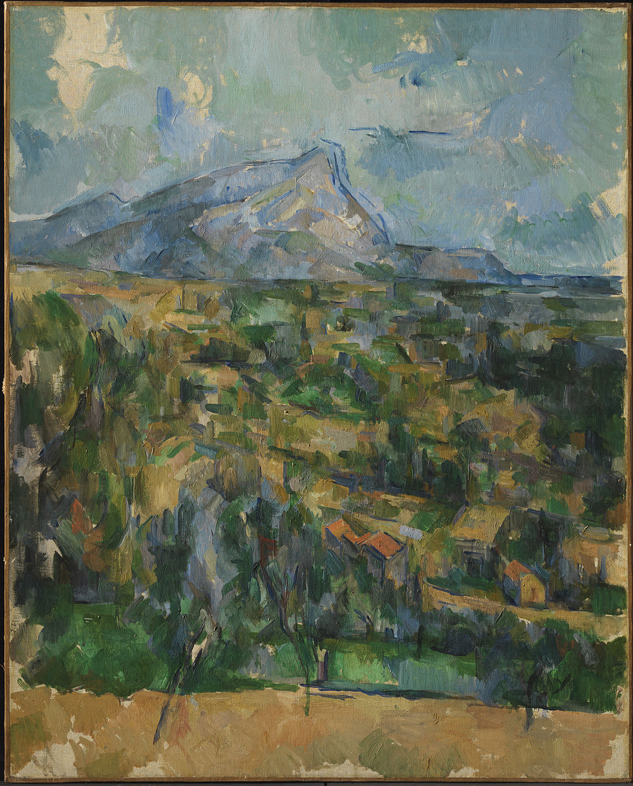

<head>
<meta charset="UTF-8" />
<meta name="keywords" content="drawing, painting" />
<meta name="description" content="drawings by Sunjy" />
<title>Sunjy</title>
<link rel="shortcut icon" type="image/x-icon" href="../../mImages/mCommon/favicon.ico" media="screen" />
<link rel="stylesheet" type="text/css" href="../../mCsses/mCommon/mCssA.css" />
<link rel="stylesheet" type="text/css" href="../../mCsses/mCommon/mCssB.css" />
<link rel="stylesheet" type="text/css" href="../../mCsses/mCommon/mCssC.css" />
<link rel="stylesheet" type="text/css" href="../../mCsses/mCommon/mCssD.css" />
<link rel="stylesheet" type="text/css" href="../../mCsses/mContent/mCssA.css" />
<link rel="stylesheet" type="text/css" href="../../mCsses/mContent/mCssB.css" />
<link rel="stylesheet" type="text/css" href="../../mCsses/mContent/mCssC.css" />
<link rel="stylesheet" type="text/css" href="../../mCsses/mContent/mCssD.css" />
</head>
<script type="text/javascript" src="../../mScripts/mContent/mContentAA.js" /></script>
<script type="text/javascript" src="../../mScripts/mContent/mContentAB.js" /></script>
<script type="text/javascript" src="../../mScripts/mContent/mContentAC.js" /></script>
<script type="text/javascript" src="../../mScripts/mContent/mContentAD.js" /></script>
<script type="text/javascript"></script> 
<script type="text/javascript">
document.write('<div class="mImgAbsolute"></div>');
/*
document.write('<p class="mFontSizeBColor" />From a white paper...</p>');
document.write('<table class="center"><tr><td>');
document.write('');
document.write('</td></tr></table>');
*/
</script>


<script type="text/javascript">
document.write('<p class="mFontSizeBColor" />Mont Sainte-Victoire</p>');
document.write('<p class="mFontSizeSColor" />Paul Cézanne created this version of “Mont Sainte-Victoire” from his hillside studio at Les Lauves. From his viewpoint, Cézanne enjoyed a magnificent view of the soaring mountain from across the valley.<br><br>This depiction includes the farmland, distinctive olive and almond trees below Les Lauves.<br><br>Cézanne first painted Mont Sainte-Victoire in 1870, beginning his decades-long fascination with the subject.  Paul Cézanne created more than thirty paintings and watercolors of Mont Sainte-Victoire.<br><br>The peak played an important role in the ancient history of his Aix-en-Provence. Its name refers to a Roman victory in 102 BC over the Teutonic armies in the area.<br><br>The Teutons were an ancient tribe mentioned by Roman authors. They are generally classified as a Germanic tribe. The Teutons are best known for their participation in the Cimbrian War with the Roman Republic in the late 2nd century BC.<br></p>');
document.write('<table class="center" /><tr><td>');
document.write('<br>This depiction includes the farmland, distinctive olive and almond trees below Les Lauves.<br><br>Cézanne first painted Mont Sainte-Victoire in 1870, beginning his decades-long fascination with the subject.  Paul Cézanne created more than thirty paintings and watercolors of Mont Sainte-Victoire.<br><br>The peak played an important role in the ancient history of his Aix-en-Provence. Its name refers to a Roman victory in 102 BC over the Teutonic armies in the area.<br><br>The Teutons were an ancient tribe mentioned by Roman authors. They are generally classified as a Germanic tribe. The Teutons are best known for their participation in the Cimbrian War with the Roman Republic in the late 2nd century BC.<br>" />');
document.write('</td></tr></table>');
</script>


